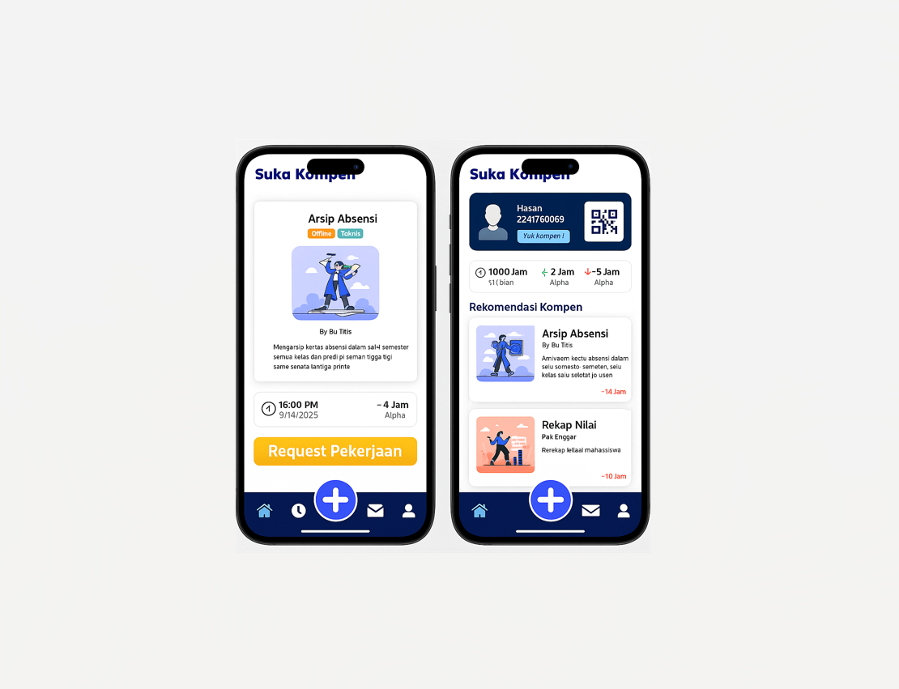

I am a sixth-semester Business Information Systems student with hands-on experience in web development. I have worked on projects using PHP (Laravel & Native), designed databases, and built REST APIs. Experienced in team collaboration using tools like Notion, and conducted performance testing with k6. My organizational involvement has strengthened my problem-solving and time management skills in technical environments.
Nasywa Syafinka Widyamara
Based in Malang, Indonesia.
About Me
Education
POLYTECHNIC NEGERI MALANG – Malang, East Java
D-IV Business Information System — GPA: 3.63/4.00
Aug 2022 – 2026 (expected)
SMAN 1 CERME – Gresik, East Java
Science Major — Score: 89,00
July 2019 - 2022
Experience
-
Basket Liga Polinema – Event Volunteer (2024)
- Oversaw and coordinated supporter activities to ensure a safe, organized, and enthusiastic atmosphere during matches, contributing to the overall success of the event.
-
Paskib SMAN 1 Cerme – Discipline Biro (2019–2021)
- Maintained discipline and punctuality as part of the troop responsible for ceremonial flag-raising duties.
- Contributed to team performance that led to winning multiple flag ceremony competitions at the regional-national level.
-
OSIS SMAN 1 Cerme – National Insight Staff
(2019-2020)
- Facilitated student development in national awareness and patriotic values through targeted OSIS programs.
Projects
Virtual Job Simulation – BCG
Executed a customer churn analysis for XYZ Analytics using Python (Pandas/NumPy), engineered an 85% accurate random forest model, and delivered actionable insights through data visualization and an executive summary.
Kimia Farma x Rakamin
Developed an interactive analytics dashboard using Google BigQuery and Looker Studio to visualize annual sales trends of Kimia Farma's products from raw data, including performance analysis, seasonal patterns, and strategic recommendations.
IT Compensation Website System
Developed a dynamic website using PHP with the Laravel framework, using MySQL database, implementing REST API for seamless communication between front-end and back-end systems with featuring role-based access, task approval workflows, REST API integration with attendance system, and QR code validation to digitize compensation processes.

IT Compensation Mobile System
This is the mobile version of the IT Compensation System using dart and flutter, featuring Laravel backend integration, real-time task tracking, QR code validation, REST API data synchronization, and offline access support.

Customer Satisfaction Website System
This is a website built with basic PHP that helps Polinema improve by collecting feedback. Different users like students, teachers, and companies can answer surveys made for their role. Admins can see all survey results to find what needs improvement. Everyone logs in with their own type of account..
Skills

HTML

CSS

JavaScript

Python

SQL
Laravel

PHP

Figma

Notion
Looker